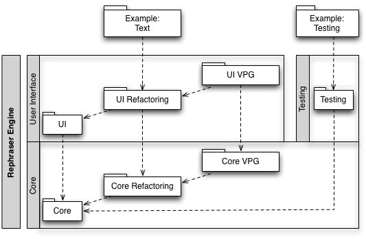

Introduction
The Rephraser Engine is an Eclipse-based library that expedites the development of refactoring tools. It contains two components:
- The refactoring component allows plug-ins to easily contribute refactorings to the Eclipse user interface.
- The virtual program graph (VPG) component provides a language-independent program database and indexing infrastructure.
These components are independent; some projects may choose to use the Refactoring component without using the VPG component, for example. The dependencies among the projects comprising the Rephraser Engine are as follows.

"Rephraser" is an acronym which stands for
Rapid
Eclipse
Prototyping
Host for
Research on
Abstract
Specified
Equivalence-based
Refactoring.
Features
Refactoring
The Refactoring component extends the Eclipse Language ToolKit (LTK) and
- contributes a Refactor menu to the workbench menu bar, as well as to the context menu for resource selections in the workbench;
- provides an extension point that allows refactorings to be contributed to this menu; and
- does not require any user interface code to be written for simple refactorings.
VPG
The VPG component
- provides a set of base classes for building persistable program graphs;
- provides an indexing infrastructure by registering a resource listener and automatically updating program graphs as workspace resources change; and
- contributes a "(Debugging)" sub-menu to the workbench Refactoring menu, which provides various actions for viewing, analyzing, and manipulating VPG databases.